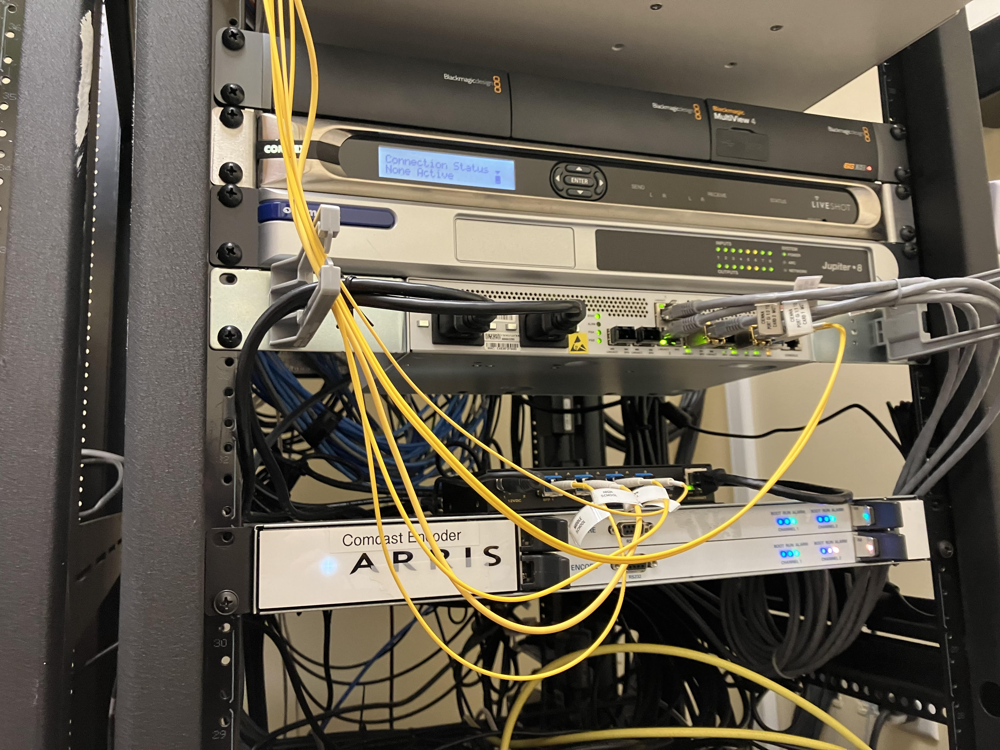

About Lee:
Lee is an aspiring network engineer, but currently they are a student at Hofstra University studying radio and infirmation systems. Originally from Massachusetts, Lee has spent the last 3 years being the "unofficial IT guy" at local radio station, WJOP-LP 96.3fm, where they've done maintenance and repairs on essential broadcasting equipment (pictured below). Lee is also an Audio/Visual technician looking to broaden their experiences with audio over IP and other ways networking and sound overlap.

Lee's skills:
Lee's skills include: Troubleshooting, soldering, customer service, cable management, audio engineering, and IP Addressing.
What Lee is working on
Lee is currently working on achieving some IT certifications, including the COMPTIA and CCNA, as well as some audio technician certifications, such as the Dante courses.